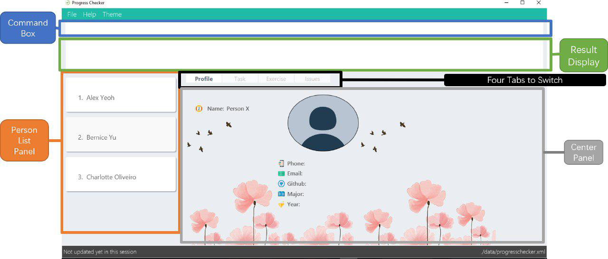

By: Team T09-B3 Since: Feb 2018 Licence: MIT
- 1. Introduction
- 2. Quick Start
- 3. Features
- 3.1. Adding a teammate:
add OR a - 3.2. Answering and saving an exercise :
answer[coming in v2.0] - 3.3. Clearing all entries :
clear OR c - 3.4. Completing a learning outcome and marking it as completed :
complete[coming in v2.0] - 3.5. Deleting a teammate :
delete or d - 3.6. Editing a teammate :
edit OR ed - 3.7. Exiting the program :
exit OR e - 3.8. Finding/Searching teammates by the keywords of name:
find OR search - 3.9. Helping user with User Guide :
help OR h - 3.10. History viewing the list of entered commands :
history - 3.11. Listing all teammates :
list OR l - 3.12. Newly adding the default task list:
newtasklist OR nl - 3.13. Redoing the previously undone command :
redo OR r - 3.14. Refreshing the content :
refresh OR rf[coming in v2.0] - 3.15. Selecting a teammate :
select OR s - 3.16. Sorting all teammates :
sort - 3.17. Toggling theme :
theme OR t[coming in v2.0] - 3.18. Undoing previous command :
undo OR u - 3.19. Viewing a specific week :
view OR v - 3.20. Saving the data
- 3.1. Adding a teammate:
- 4. FAQ
- 5. Command Summary
1. Introduction
ProgressChecker is for those who prefer to use a desktop app for managing contacts. More importantly, ProgressChecker is optimized for those who prefer to work with a Command Line Interface (CLI) while still having the benefits of a Graphical User Interface (GUI). If you can type fast, ProgressChecker can get your learning outcome tasks done faster than traditional GUI apps. Interested? Jump to the Section 2, “Quick Start” to get started. Enjoy!
2. Quick Start
Getting started with ProgressChecker is as easy as downloading and launching the software in a couple of clicks! Listed below are the important steps that you will need to follow to get started:
-
Ensure you have Java version
1.8.0_60or later installed in your Computer.Having any Java 8 version is not enough.
This app will not work with earlier versions of Java 8. -
Download the latest
progresschecker.jarhere. -
Copy the file to the folder you want to use as the home folder for your ProgressChecker.
-
Double-click the file to start the app. The GUI should appear in a few seconds.
 -
Type the command in the command box and press Enter to execute it.
e.g. typinghelpand pressing Enter will open the help window. -
Some example commands you can try:
-
list: lists all contacts -
addn/John Doe p/98765432 e/johnd@example.com m/Computer Science y/2: adds a contact namedJohn Doeto the Address Book. He is in his 2nd year majoring in computer engineering. -
delete3: deletes the 3rd contact shown in the current list -
exit: exits the app
-
-
Refer to Section 3, “Features” for details of each command.
3. Features
You may find having to learn a large new number of commands rather intimidating. The section below specifies all the commands in details with examples to help you overcome that learning curve and let you make the best out of ProgressChecker.
Command Format
-
The commands are case-insensitive. However, for simplicity all the examples have the commands in lower case.
-
Words in
UPPER_CASEare the parameters to be supplied by the user e.g. inadd n/NAME,NAMEis a parameter which can be used asadd n/John Doe. -
Items in square brackets are optional e.g
n/NAME [t/TAG]can be used asn/John Doe t/friendor asn/John Doe. -
Items with
… after them can be used multiple times including zero times e.g.[t/TAG]…can be used ast/friend,t/friend t/familyetc. -
Parameters can be in any order e.g. if the command specifies
n/NAME p/PHONE_NUMBER,p/PHONE_NUMBER n/NAMEis also acceptable.
3.1. Adding a teammate: add OR a
Adds a teammate to the ProgressChecker
Format: add n/NAME p/PHONE_NUMBER e/EMAIL m/MAJOR y/YEAR [t/TAG]…
OR
a n/NAME p/PHONE_NUMBER e/EMAIL m/MAJOR y/YEAR [t/TAG]…
| A teammate can have any number of tags (including 0) |
Examples:
-
add n/John Doe p/98765432 e/johnd@example.com m/Computer Science y/2 -
a n/John Doe p/98765432 e/johnd@example.com m/Computer Science y/2 -
add n/Betsy Crowe t/friend e/betsycrowe@example.com m/Computer Engineering p/1234567 y/3 t/criminal -
a n/Betsy Crowe t/friend e/betsycrowe@example.com m/Information Security y/2 p/1234567 t/criminal
3.2. Answering and saving an exercise : answer [coming in v2.0]
Answer an exercise based off the given question number.
Format: answer INDEX ANSWER
|
|
Examples:
-
answer 2.1.1 Procedural languages work at simple data structures and functions level
3.3. Clearing all entries : clear OR c
Clear all information inside the ProgressChecker.
Format: clear OR c
Examples:
-
clear -
c
3.4. Completing a learning outcome and marking it as completed : complete [coming in v2.0]
Check a learning outcome as completed based on the given task index.
Format: complete INDEX
Example:
-
complete 2.1 -
complete 3.2
3.5. Deleting a teammate : delete or d
Deletes the specified teammate from the ProgressChecker.
Format: delete INDEX OR d INDEX
Examples:
-
list
delete 2
Deletes the 2nd teammate in the ProgressChecker. -
find Betsy
d 1
Deletes the 1st teammate in the results of thefindcommand.
3.6. Editing a teammate : edit OR ed
Edits an existing teammate in the ProgressChecker.
Format: edit INDEX [n/NAME] [p/PHONE] [e/EMAIL] [a/ADDRESS] [t/TAG]…
OR
ed INDEX [n/NAME] [p/PHONE] [e/EMAIL] [a/ADDRESS] [t/TAG]…
Examples:
-
edit 1 p/91234567 e/johndoe@example.com
Edits the phone number and email address of the 1st teammate to be91234567andjohndoe@example.comrespectively. -
edit 2 n/Betsy Crower t/
Edits the name of the 2nd teammate to beBetsy Crowerand clears all existing tags.
3.8. Finding/Searching teammates by the keywords of name: find OR search
Finds teammates whose names contain any of the given keywords.
Format: find KEYWORD [MORE_KEYWORDS] OR search KEYWORD {MORE_KEYWORDS]
Examples:
-
find John
ReturnsjohnandJohn Doe -
search Betsy Tim John
Returns any teammate having namesBetsy,Tim, orJohn
3.10. History viewing the list of entered commands : history
Lists all the commands that you have entered in reverse chronological order.
Format: history
|
Pressing the ↑ and ↓ arrows will display the previous and next input respectively in the command box. |
Example:
-
history
3.11. Listing all teammates : list OR l
Shows a list of all teammates in the ProgressChecker.
Format: list OR l
Examples:
-
list -
l
3.12. Newly adding the default task list: newtasklist OR nl
Adds the default task list to Google account
Format: newtasklist OR nl
| Only the command word. No parameters at all. |
Examples:
-
newtasklist -
nl
3.13. Redoing the previously undone command : redo OR r
Reverses the most recent undo command.
Format: redo OR r
Examples:
-
delete 1
undo(reverses thedelete 1command)
redo(reapplies thedelete 1command) -
delete 1
r
Theredocommand fails as there are noundocommands executed previously. -
delete 1
clear
undo(reverses theclearcommand)
undo(reverses thedelete 1command)
r(reapplies thedelete 1command)
redo(reapplies theclearcommand)
3.14. Refreshing the content : refresh OR rf [coming in v2.0]
Refreshes the program to update its content.
Format: refresh
Examples:
-
refresh -
rf
3.15. Selecting a teammate : select OR s
Selects the teammate identified by the index number used in the last teammate listing.
Format: select INDEX OR s INDEX
Examples:
-
list
select 2
Selects the 2nd teammate in the ProgressChecker. -
find Betsy
s 1
Selects the 1st teammate in the results of thefindcommand.
3.16. Sorting all teammates : sort
Sorts all teammates in the ProgressChecker with their names in alphabetical order.
Format: sort
Example：
-
sort
3.17. Toggling theme : theme OR t [coming in v2.0]
Toggle between a light and dark theme.
Format: theme OR t
Examples:
-
theme -
t
3.18. Undoing previous command : undo OR u
Restores the ProgressChecker to the state before the previous undoable command was executed.
Format: undo OR u
|
Undoable commands: those commands that modify the ProgressChecker’s content ( |
Examples:
-
delete 1
list
u(reverses thedelete 1command) -
select 1
list
undo
Theundocommand fails as there are no undoable commands executed previously. -
delete 1
clear
undo(reverses theclearcommand)
u(reverses thedelete 1command)
3.19. Viewing a specific week : view OR v
Change the browser view to display contents identified by the week number.
Format: view INDEX
Examples:
-
view 2 -
view 3
3.20. Saving the data
Progress Checker data are saved in the hard disk automatically after any command that changes the data.
There is no need to save manually.
4. FAQ
You may encounter some questions related to other aspects of ProgressChecker other than the commands. This section list some frequently asked questions that you may find useful.
Q: How do I transfer my data to another Computer?
A: Install the app in the other computer and overwrite the empty data file it creates with the file that contains the data of your previous Progress Checker folder.
Q: Will the command work if I type in capital letters?
A: Yes. The commands are case-insenstive.
Q: Will the app keep all information the same with the time I close it when I open the app the other time?
A: All data are saved in the hard disk automatically after any command that changes the data. As long as the user doesn’t change the data file, the content will be the same when user open the app next time.
Q: How to close the app?
A: Either click the 'x' button on the screen or type command exit.
5. Command Summary
If you’re looking for a quick reference list of commands without all the details, the section below summarises all the available commands.
-
Add :
add n/NAME p/PHONE_NUMBER e/EMAIL m/MAJOR y/YEAR [t/TAG]…
ORa n/NAME p/PHONE_NUMBER e/EMAIL m/MAJOR y/YEAR [t/TAG]…
e.g.add n/James Ho p/22224444 e/jamesho@example.com m/Computer Science y/2 t/friend t/colleague -
Answer :
answer INDEX ANSWER
e.g.answer 2.1.1 -
Clear :
clearORc -
Complete :
complete INDEX
e.g.complete 2.1 -
Delete :
delete INDEXORd INDEX
e.g.delete 3 -
Edit :
edit INDEX [n/NAME] [p/PHONE_NUMBER] [e/EMAIL] [m/MAJOR] [y/YEAR] [t/TAG]…
ORed INDEX [n/NAME] [p/PHONE_NUMBER] [e/EMAIL] [m/MAJOR] [y/YEAR] [t/TAG]…
e.g.edit 2 n/James Lee e/jameslee@example.com -
Exit :
exitORe -
Find :
find KEYWORD [MORE_KEYWORDS]
e.g.find James Jake -
Help :
helpORh -
History :
history -
List :
listOrl -
Newtasklist :
newtasklistORnl -
Redo :
redoORr -
Refresh :
refreshORrf -
Search :
search KEYWORD [MORE_KEYWORDS]
e.g.search James Jake -
Select :
select INDEXORs INDEX
e.g.select 2 -
Sort :
sort -
Theme :
themeORt -
Undo :
undoORu -
View :
view INDEXORv INDEX
e.g.view 5
Back to Section 1, “Introduction”